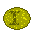
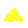
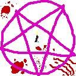

Achievementy 🏆
Tyto úspěchy můžete splnit: {{showTODO ? 'Skrýt' : 'Vypsat'}}
- {{g}}
Splněno {{s.achievements.length}}/{{getAchievementCount()}}, kurzíva značí skrytý achievement:
{{achs[a].name}} ({{achs[a].description}})
{{achs[a].flavor}}
Nastavení 🔧
Velikost okna
Zobrazit mřížku bitevního pole
Pokračovat odysseu automaticky
Manuální save do souboru Uložit
Automatický save Smazat
Historie Ukradyjamu 📜
Tento seznam pouze shrnuje nejvýznamější změny v důležitých verzích. Pokud Vás zajímá zdrojový kód aplikace včetně jeho vývoje, navštivte GitHub repozitář.
- 1.2.0 (05.06.2021) přidána Odysseia
- 1.1.6 (26.04.2020) přidán Oktoberfest
- 1.1.0 (07.06.2019) zvětšeno bojiště
- 1.0.3 (14.05.2019) poslední výzkum
- 1.0.0 (04.05.2019) oficiální release
- 0.2.0 (21.04.2019) přidána válka
|
|
{{buildings[b].name}}
{{buildings[b].flavor}} |
Ekonomický přehled
Starosta vám pomůže s vyděláváním prachů a managementem špinavého plebsu.
| Finance | |
|---|---|
| Daňový výběr: | {{demMulti([s.pop[0], consts.tax], [game.eff().prachy])}} |
| Platy dělníků: | {{demMulti([(game.popTotal() - s.pop[0]), -consts.wage], [game.eff().plat])}} |
| Údržba města: | {{demMulti([-game.moneyMaintenance()/game.eff().udrzba], [game.eff().udrzba])}} |
| ∑ | {{game.moneyTotal().withSign()}} |
| Těžba | |
|---|---|
| Dřevo: | {{demMulti([s.pop[1]], [game.eff().drevo])}} |
| Kamení: | {{demMulti([s.pop[2]], [game.eff().kamen])}} |
| Sýra: | {{demMulti([s.pop[3]], [game.eff().syra])}} |
| Pivo: | {{demMulti([s.pop[4]], [game.eff().pivo])}} |
| Průzkum veřejného vygebení | |
|---|---|
| základ: | {{game.happyBase().withSign()}} |
| populace: | {{(-game.popTotal()).withSign()}} |
| pivo: | {{game.happyHospoda().withSign()}} |
| muzeum: | {{game.happyMuzeum().withSign()}} |
| sklad: | {{game.happySklad().withSign()}} |
| palác: | {{game.happyPalac().withSign()}} |
| ∑ | {{game.realHappiness().withSign()}} |
| 🙂 | {{game.popGrowth().withSign()}} |
Strategický přehled
Generál naplánuje všechna slavná vojenská tažení a možná někdy i vyhraje.
Síla armády: {{game.eff().power.toPercent()}}, účinnost drancování: {{game.eff().dranc.toPercent()}}
Nemáme vůbec žádnou armádu.. Naše město je zcela nechráněno a může se tedy stát, že nebudeme moci dobývat nepřátele, plenit a loupit!
Tak honem do kasárny, uděláme občanům pořádnou vojnu.
{{units[i].name}} ({{n}} ks) |
Výzkumný přehled
Vědec vám vynalezne nejrůznější technologie – užitečná hnojiva i šílené rovnice!
Počet výzkumných bodů: 💡{{s.WP.addk(1e7, 1e7)}}
Rychlost výzkumu: {{game.rateWP()}}
{{WPgroupNames[$index]}}
{{w.name}} 💡{{w.cost}}
{{w.teaser}}
Přehled města {{s.name}}: přejmenovat
Populace: {{game.popTotal()}}
Populační limit: {{game.popLimit()}}
Vygebenost: {{game.realHappiness()}}
Růst populace: {{game.popGrowth().withSign()}}
Od založení města dne {{getFoundationDate()}} uplynulo {{s.iteration}} cyklů.
Škola vytváří výzkumné body, výzkumy se pak kupují v okně vědce
Počet výzkumných bodů: 💡{{s.WP.addk(1e7, 1e7)}}
Rychlost získávání bodů:
{{demMulti([game.rateWP()/game.eff().skola], [game.eff().skola]) }}
Kapacita surovin (kromě zlata):
| Základ | {{consts.baseSklad}} |
| Sklad | {{game.storage() - consts.baseSklad}} |
| ∑ | {{game.storage()}} |
Občanům se však tato úžasná hospodářská struktura oškliví, což vyjadřují -50 vygebeností za každou úroveň.
Rozšíření zahrádky, baru a posílení obsluhy nám umožňuje zvýšit pravidelný příděl piva, přičemž každá úroveň přídělu piva vygebí obyvatelstvo o 150.
Nastavený příděl: {{game.pridelHospoda()}}
Bonus vygebenosti: +{{game.happyHospoda()}}
Celková vygebenost: {{game.realHappiness()}}
Oktoberfest, čili slavnost piva v září
Způsobí krátkodobé, leč velice intenzivní vygebení.
Společnost si však získává toleranci, takže je třeba aplikovat stále větší dávky,
a nebo delší dobu počkat, aby se z toho játra opět vzpamatovala.
{{(consts.oktoberfest.base * s.oktoberfest).toFixed(0)}}
Novoroční ohňostroj ☢
Rachejtle jsou připraveny a bezpečně uloženy.
Nejlepší bude odpálit je během probíhající bitvy, aby ani sousedé nepřišli o tuto velkolepou podívanou! (v okně generála nebo nepřátelské vesnice)
Ohňostroj byl nedávno využit a než budeme moci koupit další, bude třeba uklidit všechny ty sýrou smrdící doutnající odpadky.
Úklid bude trvat ještě {{s.nukeCooldown}} cyklů (vylepšením zkušebny se čekací doba zkrátí)
Zde můžeme zakoupit ohňostroj na různé, ehm, oslavy. Bude to velmi zábavné!
 {{consts.nukePrice[0]}}  {{consts.nukePrice[3]}}
S každou úrovní paláce se mi žije o dost lépe a naše říše je mocnější.
Účinky každé úrovně:
- +10% výběr daní
- +10% těžba dřeva
- +5% těžba kamení, sýry a piva
- -5% údržba města
- -5% plat dělníků
- -100 vygebenost
Muzeum zlepšuje dopravní obslužnost města, což obyvatelé přijímají s povděkem a ocení to zvýšením své vygebenosti o 100 za každou úroveň.
Protože je tohle sklepení jinak dost nevyužité, můžeme tady třeba uskladnit různé suvenýry, co jsme přitáhli z našich válečných expedic do odlehlých dálav:
{{relics[ctrl2.relicSelect].name}}
{{relics[ctrl2.relicSelect].flavor}}
{{relics[ctrl2.relicSelect].effect}}
Úroveň kostela zesiluje efekt zázraků a snižuje dobu čekání na další rituál.
Získaný zázrak je ovšem vždy náhodný, někdy pozitivní, někdy negativní.
{{miracles[s.miracle].name}}, nad námi bude opatrovat ještě {{s.mirCountdown}} cyklů.
{{miracles[s.miracle].flavor}}
{{miracles[s.miracle].description(game.getBlvl('kostel')+consts.rel.necro*game.hasRelic('necro'))}}
Provést oběť bohům
Naši kněží jsou zcela vyčerpání po zvrácených satanistických orgiích 😈
Bude trvat ještě {{s.mirCooldown}} cyklů, než se budeme moci opět účinně rouhat.
Provést oběť bohům
🙂 {{consts.mirPrice.pop}} {{consts.mirPrice.zlato}}
Pila
Možná to mnohé překvapí, ale tento neobvyklý průmyslový areál ve skutečnosti slouží ke zpracování pokácených stromů na prkna.
Pláž
Kamenitá pláž, kde můžeme sbírat oblázky na dekoraci městských staveb. Možná by se šutry daly i těžit ze skály, ale to by dalo moc práce.
Kravín
Prosluněná louka se svěží trávou, kde se pasou krávy. Můžeme z nich dojit čerstvou sýru pro naše válečné operace.
Pivní plošina
Hlubokým vrtem se zde těží pivní vrstva ležící pod mořským dnem. Ta dle pověstí vznikla, když Zeus jednou přišel domů nakalený jak prase a Héru tak vytočil, že mu všechny sudy s pivem skopla z Olympu až do moře. Po těch letech je z toho sice hnusná břečka, ale nějaký alkohol v tom je, takže to lidé rádi vychlastaj.
Polis
Nepřátelská vesnice, která jistě skrývá ohromné bohatství zralé k uloupení!
Avšak nemůžeme přeci vyvolávat malicherné sousedské šarvátky, zatímco naši hrdinové trpí kdesi za sedmero moři! Asi je to pořád lepší než uspořádat párty pro ženichy ucházející se o jejich manželky, ale stejně, trošku respektu...
⚔️ Zaútočit (úroveň {{s.enemyLevel+1}})
Jak bojovat?
Odysseia
Naše lodě se díky hexametrickému pohonu dostanou za hranice známého světa do krajin mytických, kde na nás jistě čekají poklady o jakých se nám ani nesnilo!
Avšak nemůžeme přeci posílat vojáky na nějaký nesmyslný výlet do zámoří, zatímco doma nám zuří totální válka!
Naši hrdinové přečkali nástrahy {{s.odys.wave-1}}. ostrova a celkem vymlátili epické skóre {{s.odys.score}}
Pomocí palubní palác-antény nám hlasí, že další ostrov obývají {{odyssets[s.odys.race].name}}. Naše družina jen čeká na pokyn k dalšímu vylodění!
Vojáci už se velice dlouho vlekou od ostrova k ostrovu. Jsou vyčerpaní, zubožení a hlavně obtížení skvostnou kořistí! Vládce rybníků se nad nimi snad smiluje, když mu obětují {{consts.odys.retreatribute.toPercent()}} ze svého tučného lupu, a umožní jim bezpečný návrat domů.
🏳️ Návrat domů
Pokračovat automaticky na další ostrov